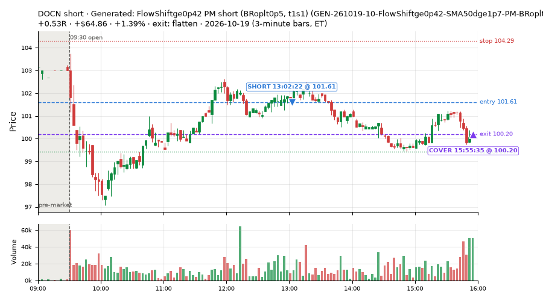
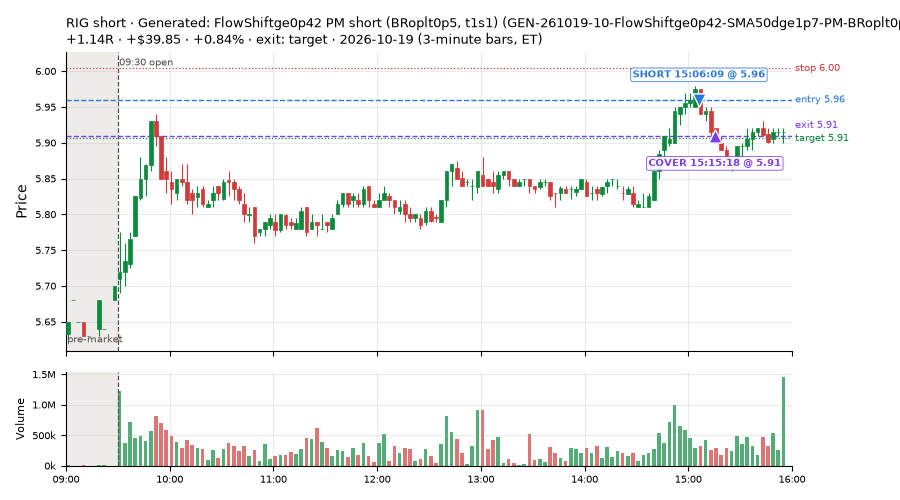
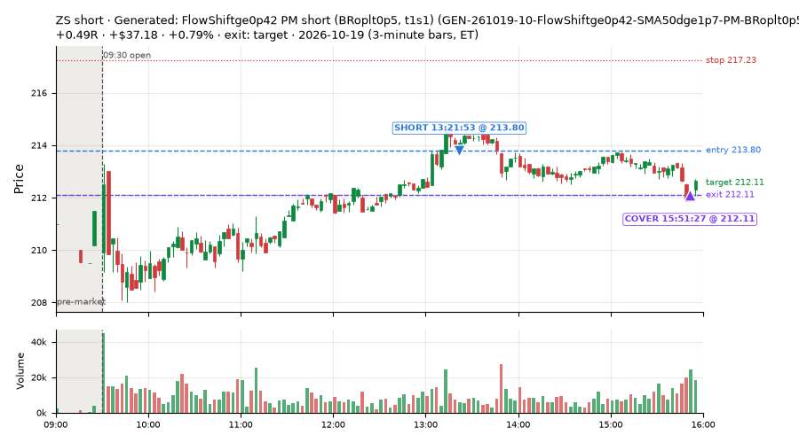
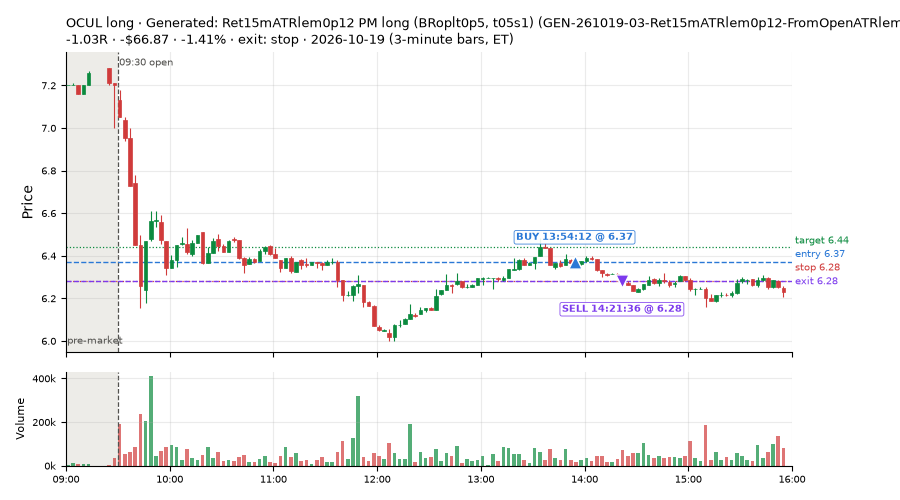
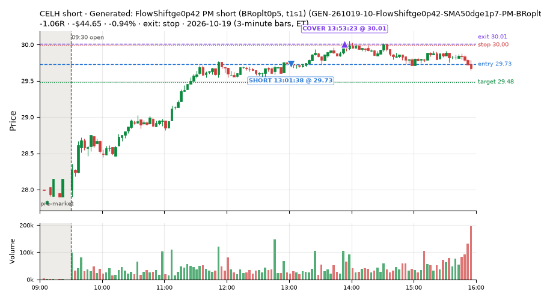

6 trades · win rate 67% · P/L $39.28
PROBATION: no live setup has passed both locked test periods. 10 owner-directed setups added 2026-10-08 (MarcoFlow top 5 + 5 new), untested live. RW6G1 (RW6 + VWAP band guard) added 2026-10-09, probation.

| Symbol | Setup | Side | In | Out | Entry | Exit | Exit reason | % gained | P/L |
|---|---|---|---|---|---|---|---|---|---|
| DOCN | Generated: FlowShiftge0p42 PM short (BRoplt0p5, t1s1) (GEN-261019-10-FlowShiftge0p42-SMA50dge1p7-PM-BRoplt0p5-t1s1-short) | short | 13:02 | 15:55 | 101.61 | 100.20 | flatten | +1.39% | $64.86 |
| RIG | Generated: FlowShiftge0p42 PM short (BRoplt0p5, t1s1) (GEN-261019-10-FlowShiftge0p42-SMA50dge1p7-PM-BRoplt0p5-t1s1-short) | short | 15:06 | 15:15 | 5.96 | 5.91 | target | +0.84% | $39.85 |
| ZS | Generated: FlowShiftge0p42 PM short (BRoplt0p5, t1s1) (GEN-261019-10-FlowShiftge0p42-SMA50dge1p7-PM-BRoplt0p5-t1s1-short) | short | 13:21 | 15:51 | 213.80 | 212.11 | target | +0.79% | $37.18 |
| Symbol | Setup | Side | In | Out | Entry | Exit | Exit reason | % lost | P/L |
|---|---|---|---|---|---|---|---|---|---|
| OCUL | GEN-261019-03-Ret15mATRlem0p12-FromOpenATRlem0p34-SMA20slopege0p29-PM-BRoplt0p5-t05s1-long | long | 13:54 | 14:21 | 6.37 | 6.28 | stop | -1.41% | $-66.87 |
| CELH | GEN-261019-10-FlowShiftge0p42-SMA50dge1p7-PM-BRoplt0p5-t1s1-short | short | 13:01 | 13:53 | 29.73 | 30.01 | stop | -0.94% | $-44.65 |





Signal to fill: median 1s, 90th percentile 2s (6 trades). Bars close each minute; the order follows the bar close.
Best excursion (MFE): median 0.45R; worst (MAE) median 0.34R. 33% of trades never got +0.25R in our favour; 0 reached +1R and still closed at or below 0.
| Symbol | Setup | Best R | Worst R | Closed R |
|---|---|---|---|---|
| OCUL | GEN-261019-03-Ret15mATRlem0p12-FromOpenATRlem0p34-SMA20slopege0p29-PM-BRoplt0p5-t05s1-long | +0.34 | -1.15 | -1.03 |
| CELH | GEN-261019-10-FlowShiftge0p42-SMA50dge1p7-PM-BRoplt0p5-t1s1-short | +0.23 | -1.11 | -1.06 |
| DOCN | GEN-261019-10-FlowShiftge0p42-SMA50dge1p7-PM-BRoplt0p5-t1s1-short | +0.81 | -0.33 | +0.53 |
| RIG | GEN-261019-10-FlowShiftge0p42-SMA50dge1p7-PM-BRoplt0p5-t1s1-short | +1.37 | -0.34 | +1.14 |
| ZS | GEN-261019-10-FlowShiftge0p42-SMA50dge1p7-PM-BRoplt0p5-t1s1-short | +0.56 | -0.18 | +0.49 |
| Entry time | Trades | Win | Avg R | P/L |
|---|---|---|---|---|
| 13:00-14:00 | 4 | 50% | -0.27 | $-9.48 |
| 14:00-16:00 | 2 | 100% | +0.60 | $48.76 |
| Setup | Trades | Win | Avg R | Adj R (net of SPY) | P/L |
|---|---|---|---|---|---|
| Generated: Ret15mATRlem0p12 PM long (BRoplt0p5, t05s1) (GEN-261019-03-Ret15mATRlem0p12-FromOpenATRlem0p34-SMA20slopege0p29-PM-BRoplt0p5-t05s1-long) | 2.0 | 50% | -0.49 | -0.53 | $-57.96 |
| Generated: FlowShiftge0p42 PM short (BRoplt0p5, t1s1) (GEN-261019-10-FlowShiftge0p42-SMA50dge1p7-PM-BRoplt0p5-t1s1-short) | 4.0 | 75% | +0.28 | +0.23 | $97.24 |
Market direction (SPY, beta 1) accounted for $11.19 of today's $39.28; the rest ($28.09) came from the setups themselves. Avg R net of SPY: -0.02 (incl. a hedge leg's cost; report only).
10 setups live today. Today: 7 signals, 6 taken, 0 lost because another setup held the symbol (0%). Since 2026-10-19 (1 sessions): 7 signals, 6 taken, 0 lost to other setups (0%). Peak open positions today 4 of 80 slots. Earnings blackout removed 364 symbols before scanning.
Simulated playing time (not live): 1 what-if trades of signals not taken, avg +0.44R, 100% winners; of them 0 lost to another setup.
| Prio | Setup | Today sig / taken | Sessions | Signals / taken / trades | Taken/day | Expected/day | Lost to other setups | Lost to (setup n) | Top skip reasons | SIMULATED: not-taken n / avg R / win | Verdict |
|---|---|---|---|---|---|---|---|---|---|---|---|
| 1 | Generated: BBpctle0p017 PM long (QQQdn, t05s1) GEN-261019-02-BBpctle0p017-SMA20slopege0p46-PM-QQQdn-t05s1-long | 0 / 0 | 1 | 0 / 0 / 0 | 0.00 | – | 0 | – | – | 0 / – | quiet - wait no signals in 1 session(s); too early to tell |
| 2 | Generated: EMAdChgge0p15 PM short (SPYltm0p5, t05s1) GEN-261019-09-EMAdChgge0p15-Since950ATRge0p6-PM-SPYltm0p5-t05s1-short | 0 / 0 | 1 | 0 / 0 / 0 | 0.00 | – | 0 | – | – | 0 / – | quiet - wait no signals in 1 session(s); too early to tell |
| 3 | Generated: NewHOD AM short (SPYdn, hold) GEN-261019-08-NewHOD-Slope6ge0p03-DayRngVsPrevge1p5-AM-SPYdn-hold-short | 0 / 0 | 1 | 0 / 0 / 0 | 0.00 | – | 0 | – | – | 0 / – | quiet - wait no signals in 1 session(s); too early to tell |
| 4 | Generated: VWAPxUp OPEN long (BRvwgt0p7, t05s05) GEN-261019-01-VWAPxUp-ATRdge3p6-FromPCATRlem0p68-OPEN-BRvwgt0p7-t05s05-long | 0 / 0 | 1 | 0 / 0 / 0 | 0.00 | – | 0 | – | – | 0 / – | quiet - wait no signals in 1 session(s); too early to tell |
| 5 | Generated: VolRatioge2, UpWickge0p59 LATE long (SPYgt0p5, t05s1) GEN-261019-07-VolRatioge2-UpWickge0p59-DayRngVsPrevge1p5-LATE-SPYgt0p5-t05s1-long | 0 / 0 | 1 | 0 / 0 / 0 | 0.00 | – | 0 | – | – | 0 / – | quiet - wait no signals in 1 session(s); too early to tell |
| 6 | Generated: VWAPxUp PM long (SPYgt0p5, holdtr) GEN-261019-06-VWAPxUp-EMAdiffge0p29-PM-SPYgt0p5-holdtr-long | 0 / 0 | 1 | 0 / 0 / 0 | 0.00 | – | 0 | – | – | 0 / – | quiet - wait no signals in 1 session(s); too early to tell |
| 7 | Generated: RSIslopelem9 OPEN long (SPYltm0p5, t1s1) GEN-261019-05-RSIslopelem9-PDLdistle0p14-EMAdifflem0p46-OPEN-SPYltm0p5-t1s1-long | 0 / 0 | 1 | 0 / 0 / 0 | 0.00 | – | 0 | – | – | 0 / – | quiet - wait no signals in 1 session(s); too early to tell |
| 8 | Generated: Ret15mATRlem0p12 PM long (BRoplt0p5, t05s1) GEN-261019-03-Ret15mATRlem0p12-FromOpenATRlem0p34-SMA20slopege0p29-PM-BRoplt0p5-t05s1-long | 3 / 2 | 1 | 3 / 2 / 2 | 2.00 | – | 0 | – | spread / quote / size 1 | 1 / +0.44R / 100% | slow 10.0 entries/week; ~6 weeks to 60 trades |
| 9 | Generated: EMAdChgge0p15 MID long (BRoplt0p5, t1s1) GEN-261019-04-EMAdChgge0p15-RSI14le22-MID-BRoplt0p5-t1s1-long | 0 / 0 | 1 | 0 / 0 / 0 | 0.00 | – | 0 | – | – | 0 / – | quiet - wait no signals in 1 session(s); too early to tell |
| 10 | Generated: FlowShiftge0p42 PM short (BRoplt0p5, t1s1) GEN-261019-10-FlowShiftge0p42-SMA50dge1p7-PM-BRoplt0p5-t1s1-short | 4 / 4 | 1 | 4 / 4 / 4 | 4.00 | – | 0 | – | – | 0 / – | ok 20.0 entries/week |
Every trade is attached as a CSV you can open and edit in Excel or Google Sheets. Live page: https://misiti15.github.io/MCF/live/